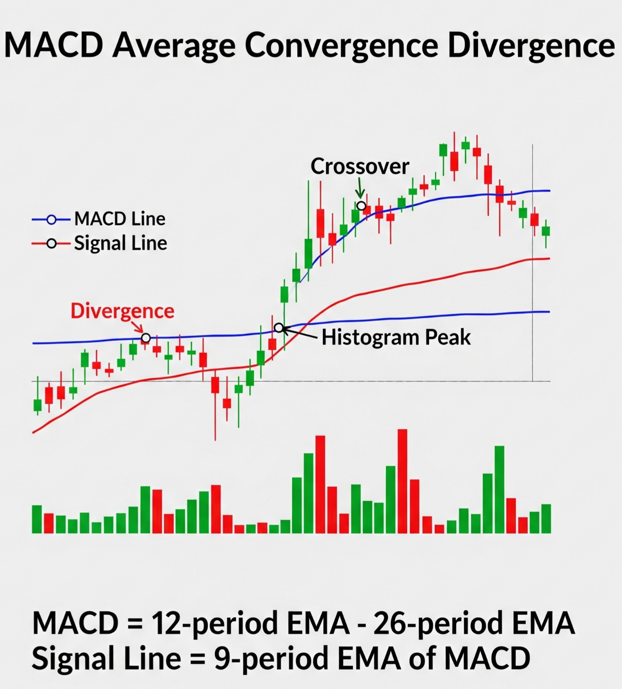
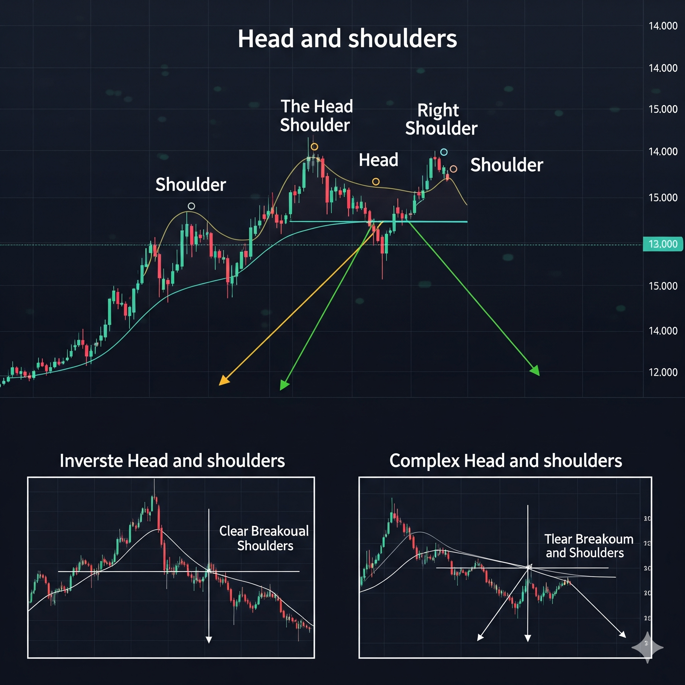

Technical Analysis Mastery
Decode market movements and trade with confidence.
-
Deciphering the Market: An Introduction to Technical Analysis
Technical analysis is a powerful trading method that focuses on one thing: what the market is doing right now. Instead of getting lost in a company's financials (that's fundamental analysis üè¶), you learn to read the story the market is telling through price charts üìà, patterns, and data. This approach helps you spot opportunities and make smarter trading decisions.

Why Technical Analysis Matters
- Spot Trends Faster üöÄ: Quickly see if a stock is heading up, down, or sideways.
- Time Your Trades Perfectly üéØ: Pinpoint ideal entry and exit points to maximize your returns.
- Works on Any Market üåç: From stocks to crypto, the principles are the same.
- Make Data-Driven Decisions ü߆: Rely on clear signals and reduce emotional trading.
-
Technical vs. Fundamental Analysis: The Trader's Toolkit
Think of it like this: fundamental and technical analysis are two different ways to understand the health of an investment. Fundamental analysis is about the company's intrinsic value, while technical analysis focuses on market movements.
Fundamental Analysis: The Long-Term Investor's Toolkit üìä
Fundamental analysis is about understanding the "why" behind a company's price. You're like a detective, digging into financial reports and earnings to find a company's **true value**. This is a long-term strategy for investors who believe the market will eventually recognize a company's worth.
Technical Analysis: The Trader's GPS üìâüìà
Technical analysis is about understanding the "what". You're like a weather forecaster, studying **past price movements and trading volume** to predict future trends. It's a short-term strategy perfect for traders who want to time their entry and exit points for quick profits.
-
Market Psychology & Price Action
Beyond charts and numbers, human emotions like greed and fear play a huge role in the market. Market psychology is the collective sentiment of traders, while price action is the visual representation of those emotions on a chart.

Greed and Euphoria: When a market is rising, greed kicks in, leading to a "Fear of Missing Out" (FOMO). This drives buying, pushing prices higher and creating a bullish trend. This can lead to a bubble where prices are detached from the underlying value.
Fear and Panic: When the market turns, fear takes over. Traders panic-sell to cut losses, accelerating the decline and creating a bearish market. This can lead to a downward spiral where assets are sold for far less than their true value.
-
Chart Types & Timeframes
Visualizing a security's price history is crucial. Line, bar, and candlestick charts are the most common ways to do this, each providing a different level of detail.

Line Charts üìà: The simplest way to show trends, connecting a series of closing prices over time.
Bar Charts üìä: More detailed, showing the open, high, low, and close prices for each period. They look like a vertical line with a horizontal tick on each side.
Candlestick Charts üïØÔ∏è: Visually intuitive, using a "body" and "wicks" to show the open, high, low, and close prices. The color of the body indicates whether the price went up (green) or down (red) during the period.
-
Trading Timeframes: Intraday, Swing, and Positional
Your trading style should align with your personality and schedule. The three main timeframes are intraday, swing, and positional trading.

Intraday Trading üèÉüí®: For the active trader. Involves buying and selling within the same day to profit from small price fluctuations.
Swing Trading üèÑ‚Äç‚ôÇÔ∏è: For the patient analyst. Positions are held for a few days to a few weeks to capture short- to medium-term trends.
Positional Trading üßò‚Äç‚ôÄÔ∏è: For the long-term investor. Positions are held for months or years, focusing on the bigger picture and ignoring minor market noise.
-
Choosing the Right Timeframe for Your Strategy
Picking a timeframe is a personal decision that depends on how much time and stress you're willing to handle. There's no single best choice, only what's right for you.
Intraday: Best if you can dedicate several hours a day and make quick decisions.
Swing: Ideal if you have a full-time job but can check the market a few times a day.
Positional: The most hands-off and perfect for busy individuals who want to invest for the long term.
-
Trend Analysis
Identifying the market’s direction is like checking the weather before going out. It helps you decide whether to carry an umbrella, wear sunglasses, or just enjoy a calm day.

Uptrend üöÄ: A series of **higher highs** and **higher lows**, showing prices are consistently moving up. Imagine the temperature rising throughout the day.
Downtrend ⬇️: A series of **lower highs** and **lower lows**, showing prices are consistently moving down. Think of your phone battery draining over the day.
Sideways Market ⚖️: Prices are moving within a narrow, horizontal range without a clear direction. Like your weight on a normal week, it fluctuates within a small range.
-
Trendlines & Channels
Trendlines and channels are fundamental tools that help you visualize the direction and strength of a market, making it easier to find potential entry and exit points.
Trendlines: The Road's Edge üöó: A straight line connecting a series of price peaks or troughs. An **uptrendline** connects higher lows (acting as support), and a **downtrendline** connects lower highs (acting as resistance).
Channels: The Entire Road üõ£Ô∏è: Formed by two parallel trendlines that enclose the price action, creating a clear path. Traders often buy at the channel support line and sell at the channel resistance line.
-
Multi-Timeframe Trend Confirmation
This is a powerful technique that involves checking the overall direction on a long-term scale and then finding the perfect timing on a short-term scale. It's like planning a big trip and making sure your daily activities align with your overall destination.
The strategy involves three simple steps:
- The Big Picture (Overall Plan): Look at your long-term goal. For trading, this is the main trend on a weekly or monthly chart.
- The Short-Term View (Daily Details): Now, focus on the details. This is the price action on a daily or hourly chart.
- The Alignment (Confirmation): Make sure the short-term view aligns with the long-term plan. For example, you wouldn't take a short trade on a 15-minute chart if the overall trend on the daily chart is strongly bullish.
-
Support & Resistance: The Market's Floor and Ceiling
Imagine a basketball bouncing in a room. The floor is the **support level**, and the ceiling is the **resistance level**. These are crucial psychological zones where traders make decisions.

- Support (The Floor üèÄ): When the price of a stock hits a support level, it's like the basketball hitting the floor. There are a lot of buyers at this price, so the price is likely to stop falling and start bouncing back up.
- Resistance (The Ceiling üèÄ): When the price hits a resistance level, it's like the ball hitting the ceiling. There are a lot of sellers at this price, so the price is likely to stop rising and either go sideways or fall back down.
-
Horizontal vs. Dynamic Support & Resistance
Support and resistance can be either fixed or constantly moving. Both are powerful tools, and a successful trader uses both to get a complete picture of the market.
Horizontal Support & Resistance ↔️: These are fixed price zones based on previous price action. Think of them as the floors and ceilings of a building, which don't move over time.
Dynamic Support & Resistance üîÑ: These are constantly moving lines that change with the market trend. They are often represented by moving averages, which act as a moving support or resistance level for the price.
-
Volume & Volatility
Volume and volatility are two key indicators that can tell you a lot about the market's health and momentum. Volume is like the "fuel" of a trend, and volatility is the "speed."

Volume ⛽: The number of shares traded in a given period. High volume confirms a trend's strength, while low volume can signal a weakening trend or a lack of interest.
Volatility üé¢: The degree of price fluctuation. High volatility means prices are moving up and down wildly, while low volatility means prices are stable. High volatility often presents greater risk but also greater potential reward.
-
Relative Strength Index (RSI)
The RSI is a momentum indicator that measures the speed and change of price movements. It helps you identify if an asset is overbought or oversold, providing clues about potential trend reversals.

The RSI is a number between 0 and 100. A reading above 70 suggests the asset is **overbought**, meaning its price may be due for a reversal downwards. A reading below 30 suggests the asset is **oversold**, meaning its price may be due for a reversal upwards.
-
Moving Average Convergence Divergence (MACD)
The MACD is a trend-following momentum indicator that shows the relationship between two moving averages of an asset’s price. It's a great tool for spotting new trends and potential trend reversals.
The MACD is made up of a fast moving average, a slow moving average, and a histogram. A **bullish crossover** (the fast line crossing above the slow line) is a buy signal, while a **bearish crossover** (the fast line crossing below the slow line) is a sell signal.
-
Head & Shoulders Pattern
This is one of the most reliable and widely recognized chart patterns. It signals a potential reversal of an uptrend into a downtrend.
The pattern consists of three peaks: a left shoulder, a higher head, and a right shoulder. The "neckline" connects the two lows between the peaks. A breakout below the neckline is a strong sell signal, indicating a potential reversal.
-
Double Top & Double Bottom
These two patterns are also strong indicators of trend reversals. They are formed when the price tries to break a support or resistance level twice but fails, signaling a potential shift in market direction.
Double Top: An M-shaped pattern that signals a reversal of an uptrend. The price hits a resistance level twice and then reverses downwards.
Double Bottom: A W-shaped pattern that signals a reversal of a downtrend. The price hits a support level twice and then reverses upwards.
-
Basic Risk Management
Risk management is the most important part of trading. It's like having a seatbelt in a car—it doesn't guarantee you won't crash, but it can save you from disaster. Your most crucial tools are stop-loss and take-profit orders.
Stop Loss üö®: An automatic order that sells your position when it hits a certain price to prevent a small loss from turning into a disaster.
Take Profit üéØ: An automatic order that sells your position when it hits a specific profit target, locking in your gains.
-
Trading Journals & Reviewing Trades
Becoming a successful trader is a journey of continuous improvement. Keeping a trading journal is your secret weapon, as it allows you to learn from both your wins and your losses.
A trading journal should include details like:
- The reason for the trade (your strategy).
- The outcome (profit or loss).
- Your emotional state during the trade.
- What you did right and what you could have done better.